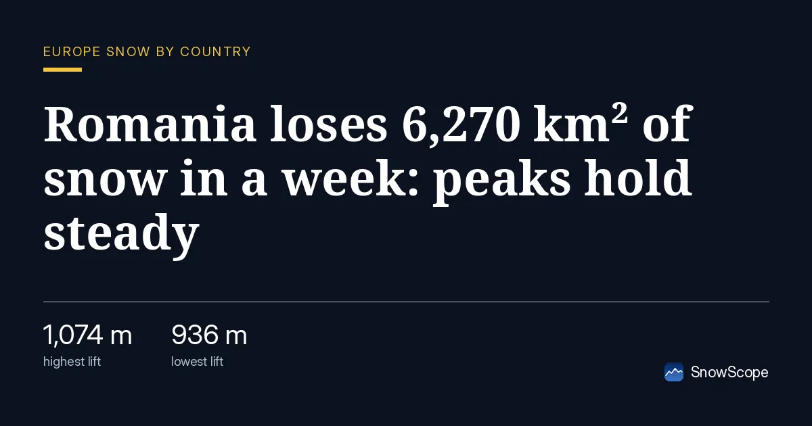
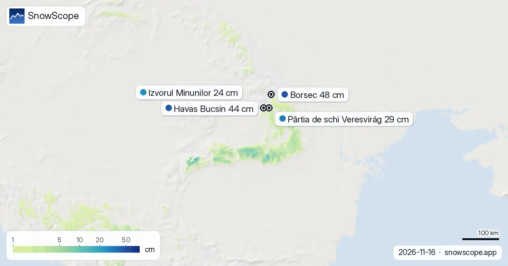

Romania loses 6,270 km² of snow in a week: peaks hold steady
Romania's snow cover fell sharply this past week, dropping from 12,900 km² seven days ago to just 6,630 km² today. The highest peaks above 1,500 metres still hold snow, with the Retezat, Bucegi and Parâng mountains staying white.
See the live snow forecast for Borsec in the SnowScope appSnow depth, powder alerts and the 3D map, free.
One week of rapid melt
One week of autumn weather changed the picture completely. Seven days ago, Romania had snow on 12,900 km² of terrain. Today it is down to 6,630 km²—we lost 6,270 km² of cover in that week. The melt was fast and uneven.
Warm air moved in and lower slopes lost their snow quickly. Even in the mountains, early-season snow is fragile. Yesterday alone, another 540 km² vanished. Right now, only 10 per cent of Romania is white. The mountains here are dry by November standards; when snow falls, there is not much competing for it.
| Resort | Snow depth | New snow, 72 h | Coming, next days | Top |
|---|---|---|---|---|
| Borsec | 48 cm | 0 cm | 0 cm | 1,074 m |
| Havas Bucsin | 44 cm | 1 cm | 2 cm | 1,494 m |
| Pârtia de schi Veresvirág | 29 cm | 1 cm | 0 cm | 1,096 m |
| Izvorul Minunilor | 24 cm | 0 cm | 0 cm | 1,363 m |
| Buscat | 19 cm | 0 cm | 0 cm | 1,671 m |

The retreat this week
The retreat has been steady and accelerating. Last week at this time we measured 12,900 km². By yesterday the figure had shrunk to 7,170 km². Today we see 6,630 km². The loss is not uniform—some high mountains gain while lower terrain sheds its cover daily.
Yesterday's loss of 540 km² shows how fast things can change once the thaw begins. The pattern is clear: snow arrives on the peaks, but warms away fast on lower ground.

Where the peaks hold snow
The highest ground is holding on. In the past 72 hours, about 2,270 km² received fresh snow of 5 centimetres or more. The Retezat Mountains, one of the driest ranges here, captured 16 centimetres in three days. The Bucegi got 14 centimetres and Parâng 13 centimetres. These peaks are important markers in a dry landscape.
Twenty-six resorts still have snow on record, out of 52 across the country. Most are high or facing north. These are the remnants of the week's first pulse of winter.
Height is everything
Altitude is everything right now. Below 1,000 metres there is virtually nothing—just 2 per cent of that band is white. Jump to 1,000–1,500 metres and you get patchy cover: 14 per cent of the terrain, with 1 centimetre average depth.
Above 1,500 metres the picture changes. Seventy-five per cent of the 1,500–2,000-metre band is white, averaging 3 centimetres. The highest ground, above 2,000 metres, is fully covered—100 per cent white at an average of 9 centimetres deep. The snow line sits at 1,500 metres.
Best snow today
If you want to ski now, seek height. Borsec has the most snow on its slope: 48 centimetres. Havas Bucsin is not far behind with 44 centimetres. Both these resorts sit below 1,500 metres, so holding this much in early November is unusual luck.
Pârtia de schi Veresvirág shows 29 centimetres, while Izvorul Minunilor measures 24 centimetres. Even the lower Buscat, at 1,671 metres altitude, keeps 19 centimetres. None of these have had fresh snow in the past three days—what they hold is old snow from earlier in November, still compacting.
What the forecast shows
The forecast offers a little hope. Friday, 20 November, is shaping as the snowiest single day in the next three days, with up to 4 centimetres expected. Over the full three-day window you could see 5 centimetres total. Stretching to seven days ahead, up to 13 centimetres is possible.
The second week of November—24 to 30 November—could bring another 10 centimetres. Early-season snow in these mountains is thin and unpredictable, but the ridge of cold air coming in should help build a base.
Tips for skiers
- Seek elevation: snow lies reliably above 1,500 metres; below that, early patches are thin and scattered.
- Target the high peaks: the Retezat, Bucegi and Parâng caught the most recent snow and hold it best.
- Check current depths at resorts before you go: Borsec and Havas Bucsin have the deepest cover now, over 44 centimetres.
- Be ready for rapid change: in early season with a thin base, conditions vary day by day.
- If going off-piste, check the official avalanche bulletin for your region.
About these numbers
Resort snow depths are the deepest snow on the resort's upper slopes from the SnowScope snow model (about 1 km, run of 16 November); they are estimates for an area, not a measurement at one point. Station values are measurements on the date shown. Forecasts can change. Always read the official avalanche bulletin before going off-piste.
Cite this report
For research, teaching or the press: the numbers and charts are free to reuse under CC BY 4.0 with this citation.
SnowScope (2026), Romania loses 6,270 km² of snow in a week: peaks hold steady, https://snowscope.app/blog/en/2026/11/romania-snow-report-16-november-2026.html, accessed 2026-11-16
SnowScope (Atlas Labs). (2026, November 16). Romania loses 6,270 km² of snow in a week: peaks hold steady. SnowScope snow reports. https://snowscope.app/blog/en/2026/11/romania-snow-report-16-november-2026.html
BibTeX
@misc{snowscope2026romaniasnowreport16novem,
author = {{SnowScope (Atlas Labs)}},
title = {Romania loses 6,270 km² of snow in a week: peaks hold steady},
year = {2026},
month = nov,
howpublished = {\url{https://snowscope.app/blog/en/2026/11/romania-snow-report-16-november-2026.html}},
note = {Published 2026-11-16 20:42 UTC; accessed 2026-11-16}
}· CC BY 4.0 · Methods, data and tools →
Borsec: snow and temperature by height, this winter vs last (tools) →
Follow Borsec
Free: a message when fresh snow is coming, and the forecast every morning.
More snow reports

Mt. Baker in December: 46 in (116 cm) of snow at mid-mountain on a typical 15 December, and a $98.80 Monday-to-Thursday ticket sold on the day only.

Plan Mammoth Mountain by season: about 93 in (235 cm) at the usual peak at mid-mountain over 46 past winters, March deepest, long springs, and winters that swing.

Mad River Glen, Vermont: natural snow, about 30 in (75 cm) at the usual peak at mid-mountain over 46 past winters, February deepest. Three ways to plan a day there.